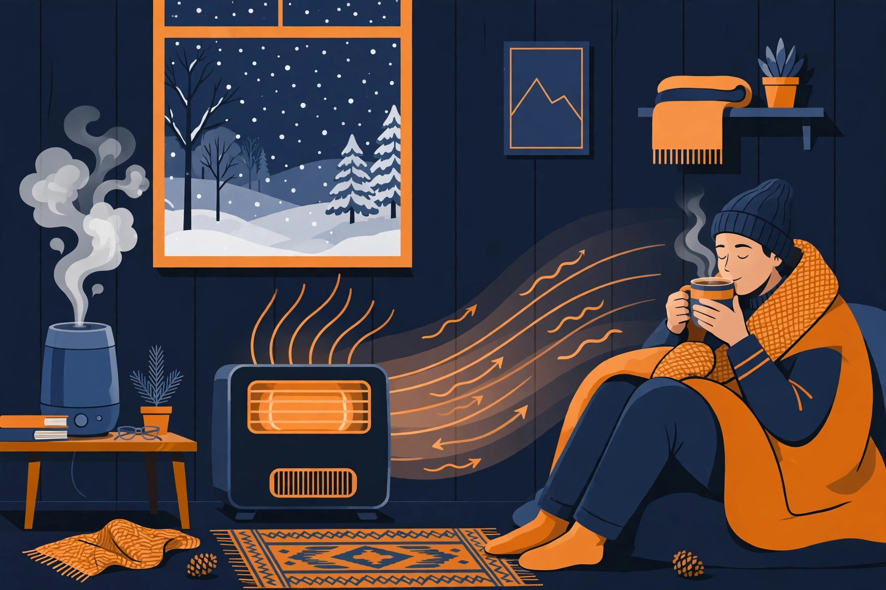
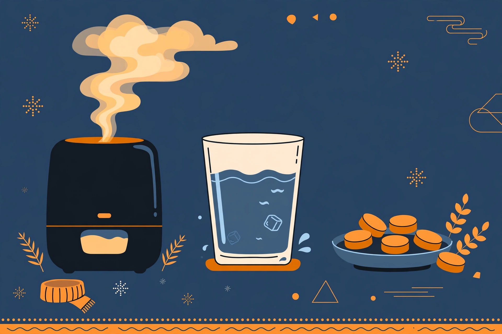

冬支度のカイカタ｜乾燥と底冷えは「場所」で潰す

- 暖房は部屋全体より「いる場所」から。足元と布団の中を温める方が、電気代は小さく済みます
- 乾燥対策は加湿器が本体。方式は性能より「手入れが続くか」で選ぶのが失敗しません
- カイロのような消耗品は、寒さが本格化する前に箱で持っておく。切らしてから買うと割高になりがちです
1. 冬の不快は3か所（図解）
暖房をつけるほど室内は乾きます。対策の本体は加湿器で、置き場所は「寝る部屋」が先です。
部屋の空気は温まっても、足元と布団の中は冷えたまま、というのが冬の不快の正体です。局所暖房と電気毛布で「いる場所だけ」を温めます。
家電では届かない場所。ここはカイロのような消耗品の担当で、単価の小さい箱買いが効きます。
2. 今年の狙い目（商品ピック）
価格は変動するので載せません。代わりに「なぜこれか」の理由を書きました。ブラックフライデー（11月19日に詳細発表）でセール対象になるかは、発表を受けてこのページで照合します。

お湯を沸かすスチーム式は、加湿が確実な方式。電気ポットと同じ構造なのでフィルターがなく、お手入れは容器を洗うだけです。タンク4.0L、加湿量は最大480ml/hで洋室13畳まで。弱運転なら約32時間連続で使えます。今季モデルは加湿音を抑えた静音設計で、寝室でも使いやすくなりました。「手入れが面倒で加湿器をやめた」人ほど向くタイプです。
掛けても敷いても使える大判タイプの定番モデル。本体は丸洗いできて、ダニ対策機能と温度調節つき。エアコンで部屋全体を温めるより、布団の中だけを温める方が消費電力は小さく済む——冬の節電の基本形です。
脱衣所・洗面所・デスクの足元に置く「局所暖房」専用。スイッチを入れてすぐ温風が出るのがセラミック式の強みで、最大1200Wの3段階切り替えと人感センサーつき。人の動きを検知して自動でON/OFFするので、短時間の暖房に向きます。幅24cm・奥行11cmのスリムな形で、置き場所も取りません。
衣類に貼るタイプで、温かさは14時間持続。売れ筋ランキングで★4.5・1,500件超のレビューがつく定番です（11月11日時点の表示）。1個ずつ買うと割高になる消耗品こそ、30個の箱で先に持つのが効きます。
3. 冬支度の手順
乾燥か、底冷えか、外出か。当てはまる場所から先に潰します。
加湿器か電気毛布か。型番まで決めておくと、セールで迷いません。
カイロなどは寒さのピーク前に。ピーク中は在庫も単価も荒れます。
11月19日のブラックフライデー発表で、このページの4点が対象か確認します。
4. よくある質問
Amazonのセールは、仕組みと順番を知らないと損をする。その「歩き方」を特集で案内しています。日々の値動きは価格の流れを確認してから、本当に安いものだけをXで速報しています。
Xで速報を受け取る（@A_KAIKATA）Amazonのアソシエイトとして、カイカタは適格販売により収入を得ています。
このサイトについて｜プライバシーポリシー